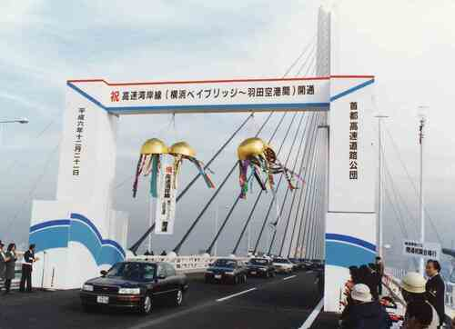
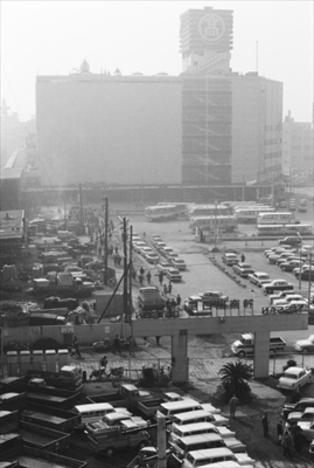
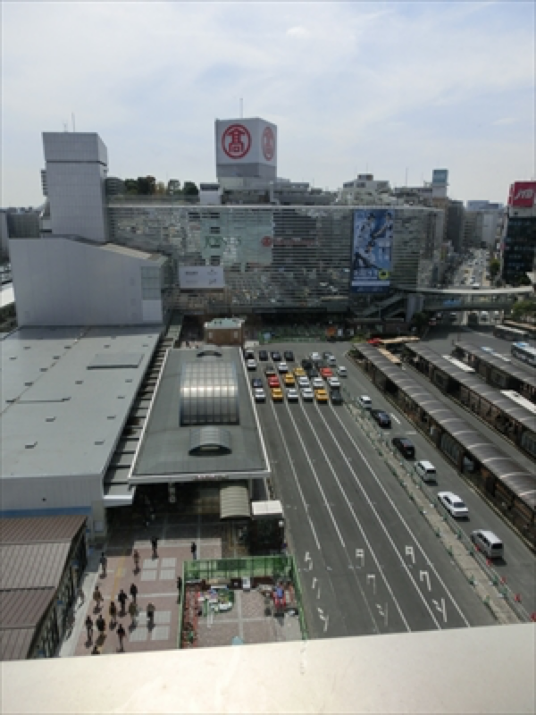
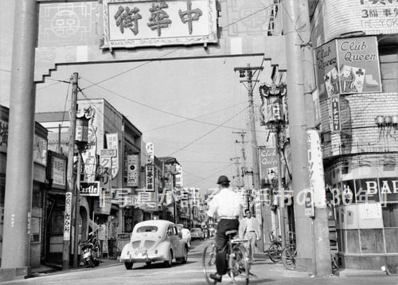
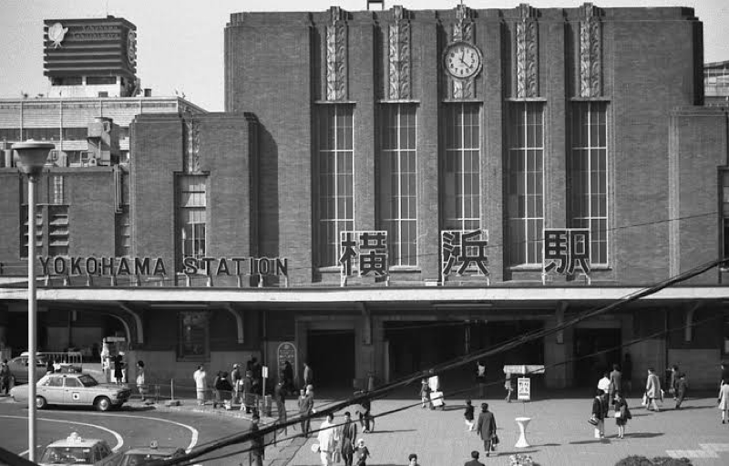
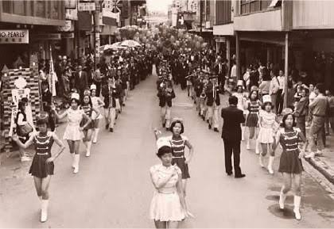
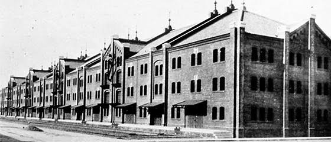

質問
・ご出身はどこですか
・2021年には2回目の東京オリンピックが開催されましたが、1964年のものと比べて感じたことはありますか？
・市営地下鉄は1976年に開通しましたが、開通当時の様子は覚えていらっしゃいますか？
・30年前と現在の横浜に対する印象は？
・これから横浜はどうなって欲しい？
・故郷と横浜の違い（地方出身の場合）
・今現在よく行く場所はどこですか？
・子供のころよく行ってた場所。
・横浜に住んでいて昔と変わったなと思うところはどんなところですか。
・みなとみらい地区が現在のように観光地として活性化し始めたの時どう思いましたか。
記憶装置









